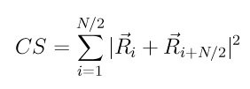

compute centro/atom command¶
Syntax¶
compute ID group-ID centro/atom lattice
- ID, group-ID are documented in compute command
- centro/atom = style name of this compute command
- lattice = fcc or bcc or N = # of neighbors per atom to include
Description¶
Define a computation that calculates the centro-symmetry parameter for each atom in the group. In solid-state systems the centro-symmetry parameter is a useful measure of the local lattice disorder around an atom and can be used to characterize whether the atom is part of a perfect lattice, a local defect (e.g. a dislocation or stacking fault), or at a surface.
The value of the centro-symmetry parameter will be 0.0 for atoms not in the specified compute group.
This parameter is computed using the following formula from (Kelchner)
where the N nearest neighbors or each atom are identified and Ri and Ri+N/2 are vectors from the central atom to a particular pair of nearest neighbors. There are N*(N-1)/2 possible neighbor pairs that can contribute to this formula. The quantity in the sum is computed for each, and the N/2 smallest are used. This will typically be for pairs of atoms in symmetrically opposite positions with respect to the central atom; hence the i+N/2 notation.
N is an input parameter, which should be set to correspond to the number of nearest neighbors in the underlying lattice of atoms. If the keyword fcc or bcc is used, N is set to 12 and 8 respectively. More generally, N can be set to a positive, even integer.
For an atom on a lattice site, surrounded by atoms on a perfect lattice, the centro-symmetry parameter will be 0. It will be near 0 for small thermal perturbations of a perfect lattice. If a point defect exists, the symmetry is broken, and the parameter will be a larger positive value. An atom at a surface will have a large positive parameter. If the atom does not have N neighbors (within the potential cutoff), then its centro-symmetry parameter is set to 0.0.
Only atoms within the cutoff of the pairwise neighbor list are considered as possible neighbors. Atoms not in the compute group are included in the N neighbors used in this calculation.
The neighbor list needed to compute this quantity is constructed each time the calculation is performed (e.g. each time a snapshot of atoms is dumped). Thus it can be inefficient to compute/dump this quantity too frequently or to have multiple compute/dump commands, each with a centro/atom style.
Output info:
This compute calculates a per-atom vector, which can be accessed by any command that uses per-atom values from a compute as input. See Section_howto 15 for an overview of LAMMPS output options.
The per-atom vector values are unitless values >= 0.0. Their magnitude depends on the lattice style due to the number of contibuting neighbor pairs in the summation in the formula above. And it depends on the local defects surrounding the central atom, as described above.
Here are typical centro-symmetry values, from a a nanoindentation simulation into gold (FCC). These were provided by Jon Zimmerman (Sandia):
Bulk lattice = 0
Dislocation core ~ 1.0 (0.5 to 1.25)
Stacking faults ~ 5.0 (4.0 to 6.0)
Free surface ~ 23.0
These values are not normalized by the square of the lattice parameter. If they were, normalized values would be:
Bulk lattice = 0
Dislocation core ~ 0.06 (0.03 to 0.075)
Stacking faults ~ 0.3 (0.24 to 0.36)
Free surface ~ 1.38
For BCC materials, the values for dislocation cores and free surfaces would be somewhat different, due to their being only 8 neighbors instead of 12.
Restrictions¶
none